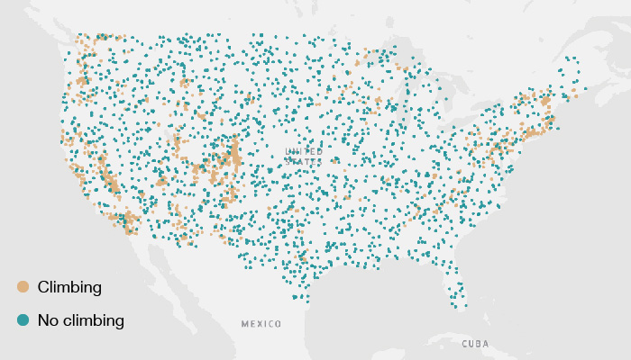
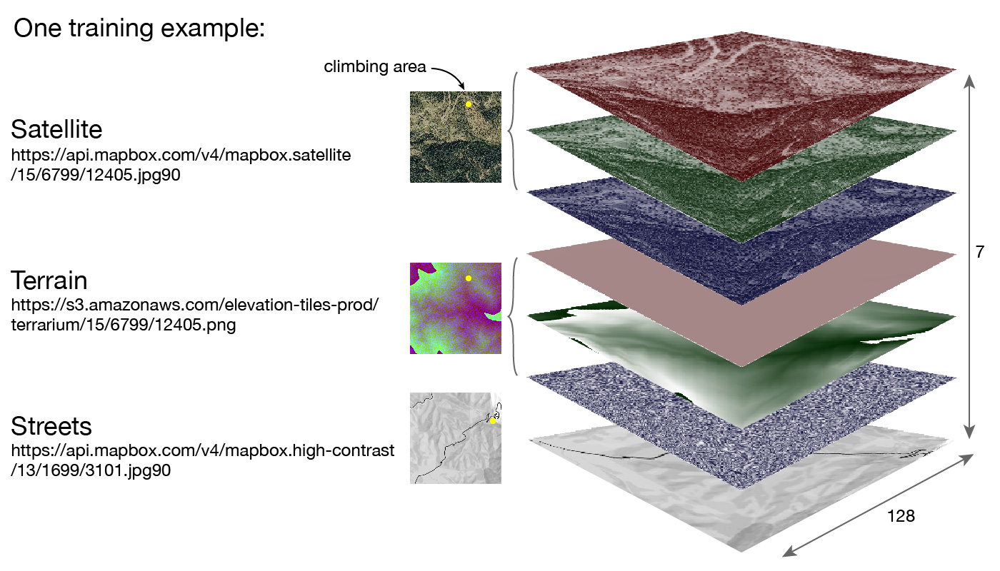
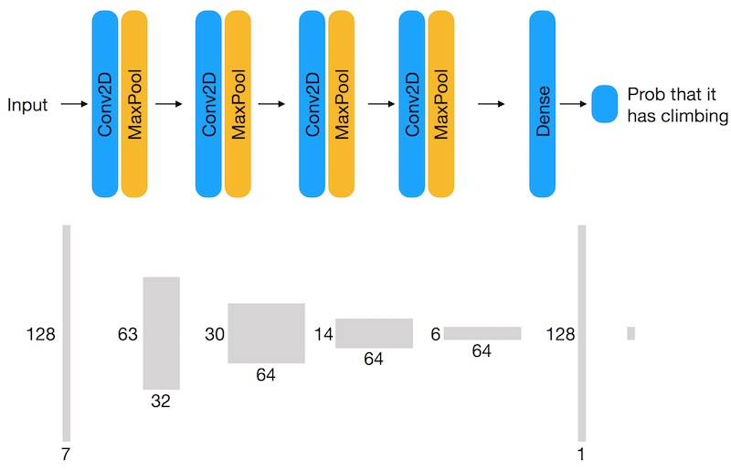
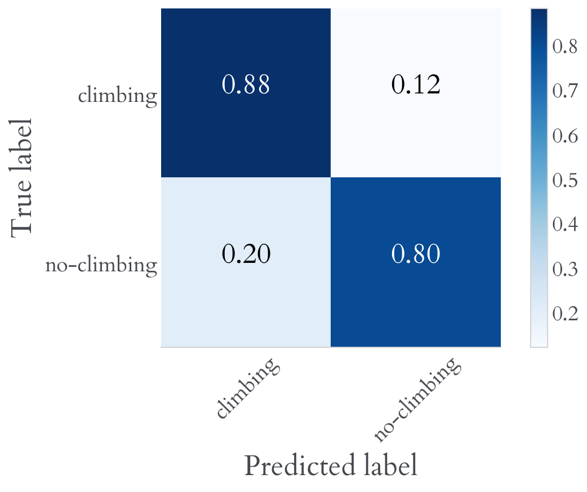
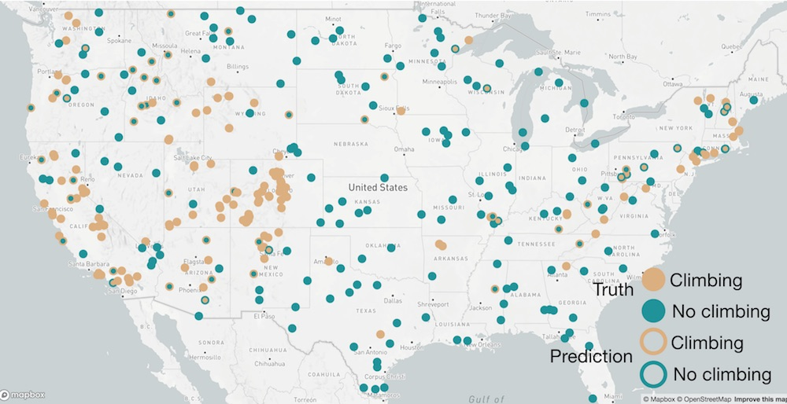
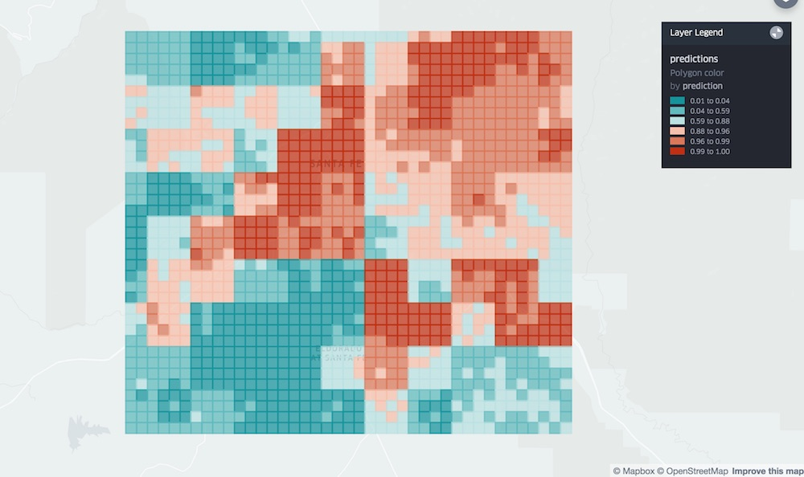

Deep convolutional neural networks have become the stardard approach in many computer vision applications, yet they're still difficult to use in fields, like geospatial, where images are not 256x256 pixel RGB jpegs. In other words, places where Google Vision API isn't going to be much help. To make matters worse, geospatial data has traditionally been stored in large cumbersome files and required significant pre-processing to get it ready for analysis.
Fortunately, it's getting easier to use big geospatial data. There's momentum behind the COG file format, which enables more friendly data access and awesome APIs like tiles.rdnt.io. And although they're designed more for display than analytic purposes, web map tiles are an easy to consume geospatial data set with world-wide coverage. I first started thinking about using map tiles for analysis when Mapzen created terrain tiles, which are map tiles where the color encodes elevation, kind of like a DEM.
With map tiles serving as a convenient data set and a deep ConvNet as a general purpose computer vision tool, I just needed a problem to solve! How about finding climbing locations! The locations of many climbing areas are already known of course, but climbers are always on the lookout for new crags and a common tool in that quest is Google Maps, so there was reason to believe that I could train a model to use similar map data to find climbing areas.
The basic idea was to train a ConvNet to do binary classification of map tiles, identifying which ones contain climbing and which ones don't. To start building a data set for training and testing, I used a list of more than 1000 climbing areas from MountainProject.com. That provided examples of locations with climbing, but to do binary classifaction I also needed examples of locations without climbing. Here I made the assumption that climbing locations are relatively rare, so if I randomly picked locations in the United States I could assume they did not contain climbing.

The next step was to gather the map tiles corresponding to each example. Web map tiles have a url which follows a standard pattern: {base-url}/{zoom}/{X}/{Y}.jpg and with a longitude, latitude and zoom level, it's straight forward to calculate the {X} and {Y} values for the corresponding tile. What's nice about map tiles for deep learning is that every tile is the same size, 256x256, and getting different types of data is as simple as changing the {base_url}.
For this task, it made sense to use satellite imagery, since rocks look different than trees, for example. But in satellite imagery, a flat rock slab (no climbing) looks similar to a steep rock wall (climbing). So I also included terrain tiles, which encode topographic elevation in the RGB colors of the image. With satellite imagery and terrain, I was hopeful that a model could indentify steep rocky areas where there is likely to be climbing. But I was worried that it would identify all mountainous regions as having climbing, which is true in some ways, but there's another important factor which determines which areas are actually explored by climbers, and that's accessibility, or distance from roads or towns. To provide the model with some information about accessibility, I also included a simple, high-contrast map tile which mainly depicts roads. These "street" map tiles were available in the usual RGB jpeg format, but since they were basically monochrome, I converted them to a single grayscale layer, rather than keep all three, redundant RGB layers.

With the labels and map tiles in hand, I was ready to train a ConvNet. In situations like this where the training data set is relatively small, it's common to employ transfer learning, where you "fine-tune" a model that has been pre-trained on a much larger data set. But those pre-trained models are usually limited to small 3-channel RGB images and it's unclear to me how to extend them to work with N-channel images, so I trained a small ConvNet from scratch. I used the typical strategies, like dropout and regularization, to prevent overfitting and image rotation and flips to augment the training examples. I performed the training using Keras on a GPU EC2 instance on AWS. (The deep learning AMIs were very convenient.)

I was pleasantly surprised that the model achieved 84% accuracy on the test set. Using a threshold of p = 0.5 on the output probabilities to distinguish climbing from no-climbing areas, the number of false positives and false negatives were about the same.

And when plotting the results on a map, there were no obvious patterns in the location of the correct and incorrect predictions.

One of the best parts about using web map tiles is that becuase of their world-wide coverage, the model can be used to run predictions for any location on earth. That isn't to say that the predictions will neccessarily be accurate. Rather than run inference on discrete locations like those in the test set, I selected a grid of locations covering Santa Fe, New Mexico to see what the model would do. The result was not encouraging. Shown below is a heatmap of the probability of climbing around Santa Fe.

There are a couple of things going on. The small squares are the same size and location of the satellite and terrain map tiles used in the model. You also see larger square regions where the predictions are correlated. These are the size and locations of the "streets" map tiles used in the model. So apparently the "street" map tiles are having a strong influence on the predictions. We also see a large area of high probablity over downtown Santa Fe, which is incorrect. The model is seems to be predicting that either mountainous areas or areas of high road density are correlated with climbing. This points to a problem in the training data and how the "no-climbing" examples were chosen. The "climbing" examples contained some locations near or in cities with high road density, but by picking random locations in the US as "no-climbing" examples, it's very unlikely that they include any high density road areas. The result is that the model learned that high road density = climbing.
Deep learning models often fail due to problems with training data and this case was no different. The next step in improving this model would be to ensure that both classes contained geographically diverse examples, in particular that the "no-climbing" class contained rural and urban examples.
But, I'm not sure it's worth expending more effort on this particular model - it's only meant to predict climbing locations after all. What I'm most excited about is the general approach of using deep ConvNets on map tiles to find objects and classify the earth's surface. All that's need is a list of labelled locations or polygons and map tiles.